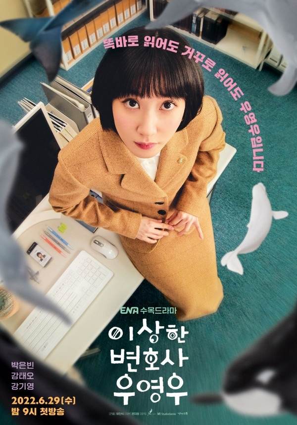

- 스토브리그
- 브람스를 좋아하세요?
- 이상한 변호사 우영우
이상한 변호사 우영우

<기획의도>
POINT1 . 흥미롭고 사랑스러운 캐릭터가 보여주는 극복의 드라마
'자폐 스펙트럼 장애'를 가진 영우는 강점과 약점을 한 몸에 지닌 캐릭터다.
영우의 강점은 우리들 대부분이 범접할 수 없을 만큼 탁월하지만,
영우의 약점은 우리들 대부분이 깜짝 놀랄 만큼 취약하다.
164의 높은 IQ, 엄청난 양의 법조문과 판례를 정확하게 외우는 기억력,
선입견이나 감정에 사로잡히지 않는 자유로운 사고방식이 영우의 강점이다.
감강이 예민해 종종 불안해하고, 몸을 조화롭게 다루지 못해 걷기, 뛰기,
신발끈 묶기, 회전문 통과 등에 서툴다. 영우는 극도의 강함과 극도의 약함을
한몸에 지닌 인물이자 높은 IQ와 낮은 EQ의 결합체이며 우리들 대부분보다
우월한 동시에 우리들 대부분보다 열등한 존재다. 영우는 한마디로 흥미롭다.
POINT2 . 에피소드 중심의 법정 드라마
이 드라마는 서울대 로스쿨을 수석 졸업하고 변호사시험에 합격한
우영우가 대형로펌 '법무법인 한바다'의 변호사가 되는 것에서부터 시작한다.
'이상한 변호사 우영우'는 영우와 한바다의 변호사들이 '한 화에 한 개씩의 사건'을
해결하는 구성이다. 매화 흥미진진한 새 사건이 도전장을 내밀면, 우리의 주인공이
언제나처럼 멋지게 문제를 풀어내는 모습을 보는 쾌감. 즉 '에피소드 중심의 법정
드라마'만이 가질 수 있는 매력을 선사하고자 한다.
POINT3 . '우영우 같은 변호사'를 꿈꾸게 하는 드라마
우리는 정직하고 성실하고 정의롭고 유능한 변호사를 원한다.
하지만 현실에서 그런 변호사를 만나기란 얼마나 어려운가?
우리의 영우는 고집스러울 만큼 정직하고 성실하며 정의롭다.
또 '법'에 대해서라면 그 누구보다 많이 알고, 맡은 사건에 집요하게
파고드는 열정이 있다. 시청자들의 입에서 "나도 저런 변호사를 만나고 싶다!"는
소리가 절로 나오도록, '이상한 변호사 우영우'는 '영우가 가진 변호사로서의
장점'을 충실히 표현할 것이다.